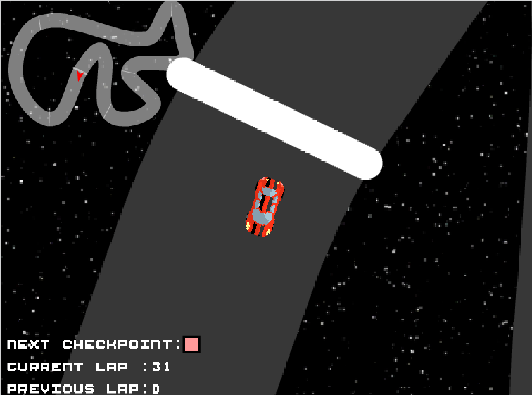

Scratch Game: Tokyo Drift


https://scratch.mit.edu/projects/260754853/
Description
You are a drifter, drift fam. The implemented a time system so when you complete one
lap, your time is recorded. You are the randomness. The way that you move is
what causes it to be random. As you progress through the game, you try to
get a faster time. It becomes increasingly difficult. The game ends as soon
as you click the close button on your browser. The point of the game is just
to beat your best time so there is no end to the game?
Reflection
The reason that I created this game was just for the love of cars and racing games.
I have always had an interest in cars and this was an idea that I was thinking about.
What inspired me to make this game is the love for the Fast and Furious Franchise.
I was very proud of the drifting mechanics and the map on the top left side of the game.
I had to overcome the drifting mechanics. Another was the timed laps.
I overcame these challenges by looking at many other games and looking online for any advice.
If I had more time, I would make the road look better and I would add Nicholas Cage as a
character select.

This algorithm is a large part of how the laps are timed and how the colors of the markers
change. As the car hits on of the specified colors, the lap and the location is updated.
The car must touch the color in order to successfully complete a lap.

This are my blocks. I got a majority of them through the help
of my friends and getting them from other Scratch games. :)
Why did you say that name?
This is a story about